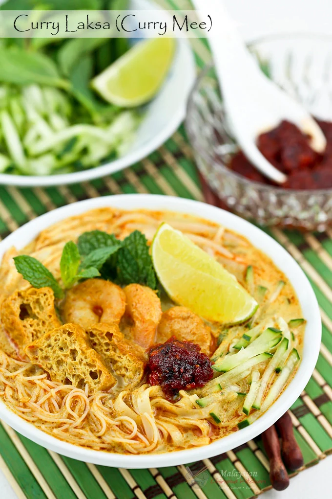

Home
Curry Mee

Curry Laksa (Curry Mee) is a delicious spicy curried noodle soup with a variety of toppings. This is my family's version found mainly in the Klang Valley and its surrounding areas.
Ingredients
- 1/3 cup vegetable oil (80ml)
- 2 bone-in chicken breasts (skin removed)
- 3 pandan leaves (shredded and knotted)
- 12 oz bean sprouts (trimmed) (340g)
- 6 oz beehoon (dried rice vermicelli), soak in warm water for 30 minutes to soften (170g)
- 12 oz fresh yellow noodles or dried yellow noodles (225g)
- 8 oz shrimps (peeled and deveined) (225g)
- 1 can coconut milk (14 oz/400ml)
- 4 oz deep fried tofu (sliced) (113g)
- Salt to taste
Steps
- Blend all spice paste ingredients with ¼ cup (60ml) water until smooth. Pour mixture into a bowl. Mix with curry powder to form a thick paste.
- Heat vegetable oil in a large pot over medium heat. Stir fry spice paste until fragrant, about 5 minutes. Add chicken breasts and cook until opaque, about 3 minutes.
- Pour in 6 cups (1.4 liters) water. Add pandan leaves. Cover and bring soup to a boil. Reduce heat and allow it to simmer for 20 minutes.
- In the meantime, fill a separate pot half full of water. Bring to a boil. Scald bean sprouts for about 20 seconds. Remove with a metal strainer.
- Add beehoon (dried rice vermicelli) and cook for 2 minutes. Remove with metal strainer.
- Cook fresh yellow noodles in boiling water for 2 to 3 minutes and dried yellow noodles for 3 to 5 minutes. Remove with metal strainer. Set aside.
- Remove chicken breasts from curry soup with tongs. When cool enough to handle, shred meat and discard bones.
- Lower shrimps into curry soup with a metal strainer. Allow shrimps to cook for 3 to 4 minutes until shrimps curl and turn pink. Remove and set aside.
- Pour coconut milk into soup. Add deep fried tofu and season with salt. Bring it up to a boil and allow coconut milk to heat through. Turn off heat.
- Place a portion of noodles, bean sprouts, some shredded chicken, and shrimps in a bowl. Pour curry soup over noodles and vegetables. Garnish with cucumber and mint leaves.
- Serve Immediately with fried chili paste and lime wedges.